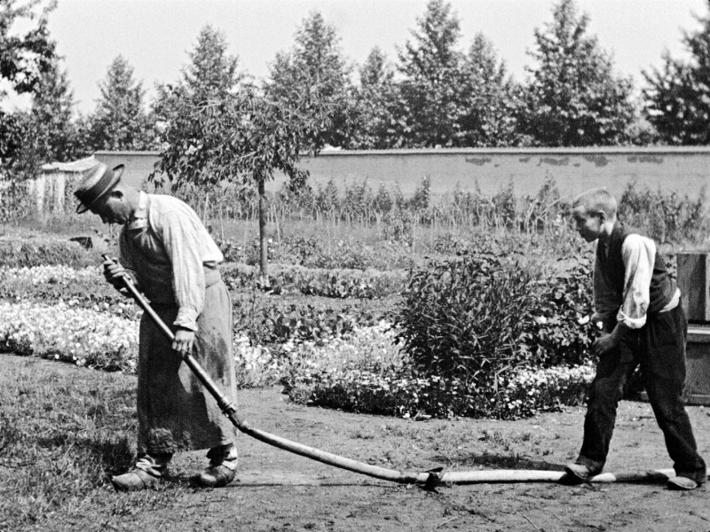
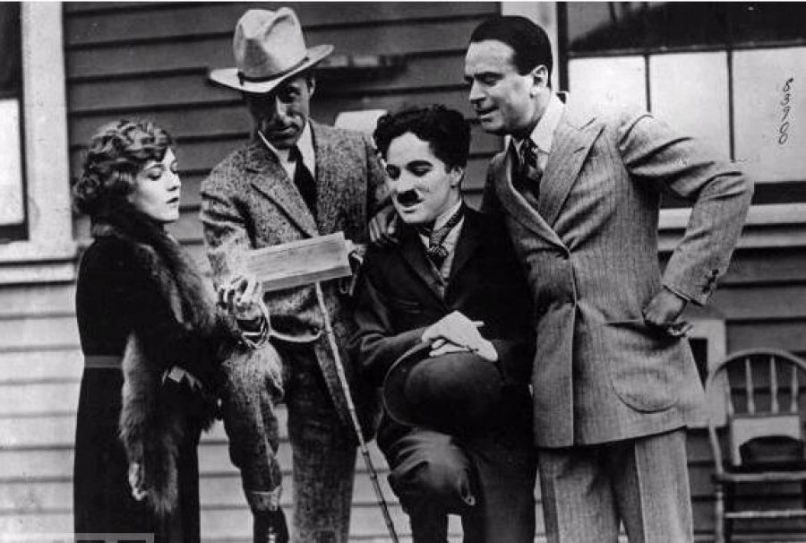
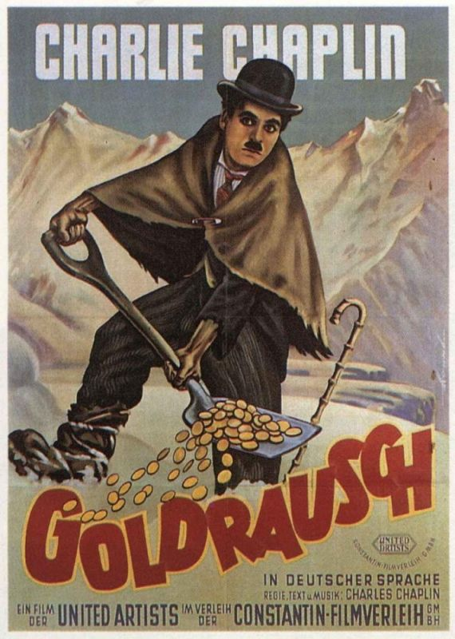

Первые годы кинематографа
Фактическая история кинематографа началась в 1895 году, когда братья Люмьер изобрели и запатентовали синематограф -
лёгкий кинопроектор, главным новшеством которого являлся подход к съёмке, удобный для открытого воздуха и любых закрытых
помещений, а также то, что фильмы можно было показывать не одному, а целому залу зрителей. Уже 28 декабря 1895 года на
бульваре Капуцинок в одном из залов «Гранд кафе» прошёл первый сеанс кинопоказа. На нём был представлено несколько
роликов,продолжительностью 45-50 секунд. Среди них был комедийный сюжет «Политый поливальщик». Позднее в 1986 году был продемонстрирован
знаменитый ролик "Прибытие поезда на вокзал
Ла-Сьота". Вскоре во всем мире были созданы кинокомпании и киностудии. В первое десятилетие кинематографа кино
превратилось из новинки в устоявшуюся индустрию массовых развлечений. Самые ранние фильмы были черно-белыми,
длительностью менее минуты, без записи звука и состояли из одного кадра, снятого неподвижной камерой. Американец Мелиес
начал объединять эти короткометражные фильмы вместе, чтобы создавать истории. Его «Путешествие на Луну» из 30 сцен (1902),основанное на романе Жюля
Верна, возможно, являлся самым популярным фильмом того времени. Кинематограф развивался на протяжении многих лет
благодаря появлению монтажа, движению камеры и другим кинематографическим приёмам.
Одни из первых фильмов

1910е годы
В 1910-x годах кино начинает развиваться как индустрия. К 1914 году появилось несколько национальных киноиндустрий.
Европа, Россия и Скандинавия доминировали на этом рынке.Были созданы российские кинокомпании Александра Дранкова и
Александра Ханжонкова. Компания Ханжонкова быстро стала крупнейшей кинокомпанией и оставалась таковой до 1918 года. По
мере того, как всё больше людей платили за просмотр фильмов, индустрия была готова вкладывать больше денег в
производство и распространение кинофильмов. Создавались большие студии и специальные залы. Но Первая мировая война
сильно ограничила киноиндустрию в Европе, что позволило Америке вырваться вперёд. В 1911 году компания «Кентавр» из
Нью-Джерси арендовала заброшенную придорожную закусочную, которую обустроили под киностудию и дали название «Студия
Нестор». Это здание впоследствии стало «Кинолабораторией Голливуда». Через три года – в 1914-м – тут был снят
полнометражный художественный фильм «Муж индианки». Создателями выступили Сесил Б. ДеМилль и Оскар Апфель. Голливуд стал
набирать обороты как центр кинопроизводства. К 1915 году более 60 процентов кинопроизводства США было сосредоточено в
Голливуде. Также в 1910-х годах свой творческий путь в кинематографе начал Чарли Чаплин, один из самых известных
деятелей кино.
Кинематограф 1910х годов

1920е годы
На 1920-е годы пришлись расцвет и закат немого кино. В США выходили настоящие немые блокбастеры. Фильмы Чарли Чаплина (Малыш, Золотая лихорадка, Цирк) покоряли зрителей и критиков. Американские киностудии снимали уже полноценные масштабные картины, пусть пока и немые. В это время в Европе, сильно пострадавшей из-за войны, кино не останавливалось на месте. В эти годы во Франции возникли целых два течения, Первый авангард и Второй авангард. В 1927 году вышел фильм "Страсти Жаны Д’Арк", один из лучших французских фильмов того времени. Очень интересно развивалось кино в Германии, огромное влияние на него оказал экспрессионизм, как нельзя лучше подходивший для передачи мрачной и тягостной атмосферы того времени. В те годы выходили фильмы о кошмарах, галлюцинациях и монстров. ("Носферату, симфония ужаса", "Кабинет доктора Калигари"). Весомый вклад в развития кинематографа внёс советский режиссёр Сергей Эйзенштейн. Его фильм "Броненосец Потёмкин" по сей день преподаётся в киношколах. Но самым главным событием этого десятилетия стало появление звука. Такое новшество было принято скептически, особенно немыми актёрами, но история расставила всё на свои места, и сегодня уже сложно представить себе, чтобы немой фильм выходил в кинотеатрах. Так как зритель охотно шёл на фильмы, которые он слышал, то очень быстро началось переоборудование всей аппаратуры под звук.
Фильмы 1920-х годов
